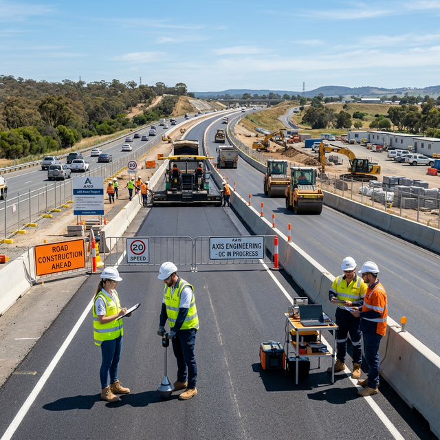

Experienced Civil Engineer specializing in high-quality road infrastructure.

Sanjeeb Dhakal is a dedicated Civil Engineer with a profound focus on Road Quality Assurance and Infrastructure Inspection. With a career built on the principles of precision and safety, Sanjeeb has successfully overseen numerous infrastructure projects, ensuring they meet the highest standards of durability and functionality.
His expertise lies in bridge the gap between architectural design and practical, high-quality execution. By implementing rigorous testing and monitoring protocols, he helps government agencies and contractors deliver infrastructure that stands the test of time.
Bachelor of Civil Engineering
Pulchowk Campus, IOE
5+ Years in Road QA
National & International Projects
A comprehensive toolkit developed through years of field work and technical analysis.
Standardized quality assurance and quality control protocols for highway construction.
Expertise in both flexible and rigid pavement design and analysis.
Structural integrity assessment and maintenance planning for bridges.
Coordinating multiple teams and ensuring timeline adherence with quality benchmarks.
Conducting and interpreting soil, asphalt, and concrete material tests.
Proficiency in AutoCAD, SAP2000, and other engineering software.